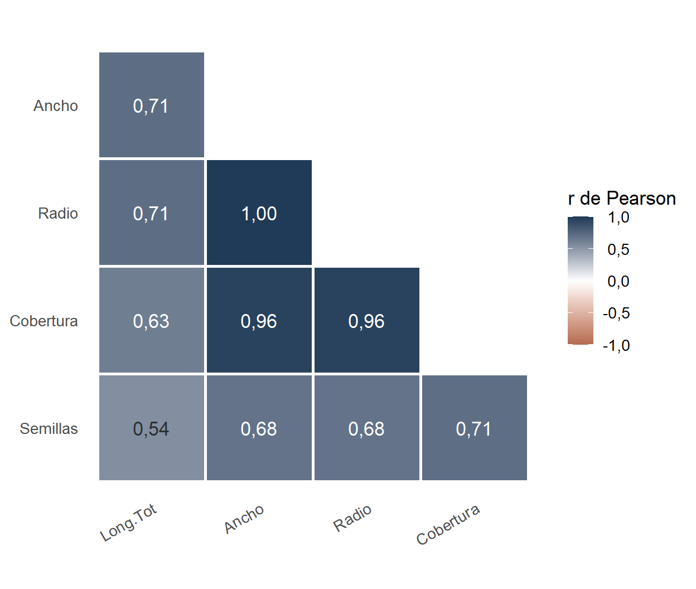
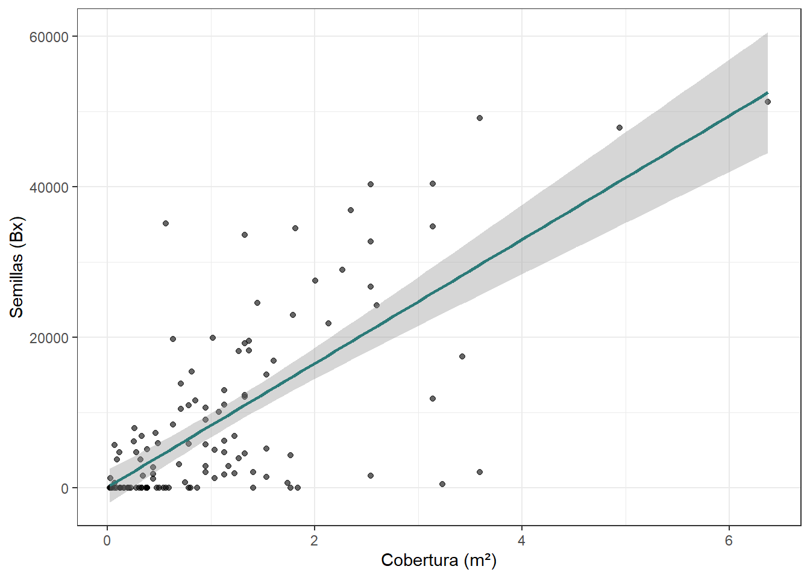
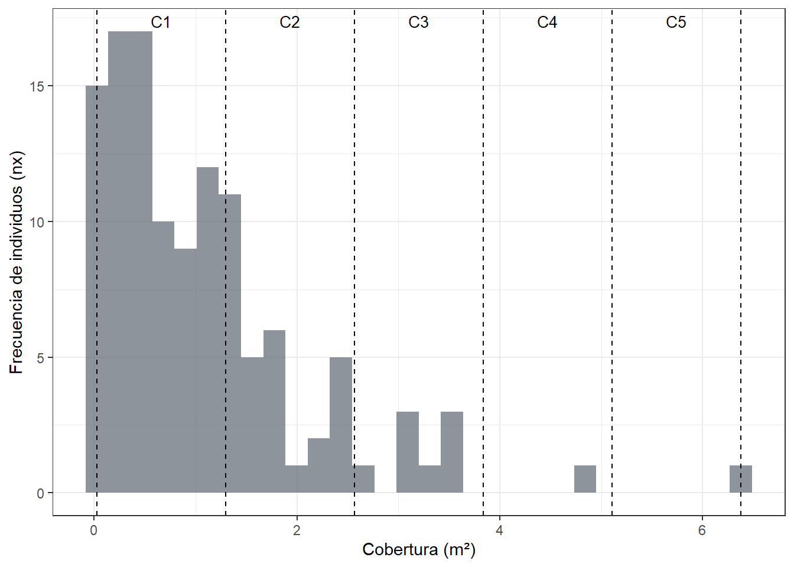
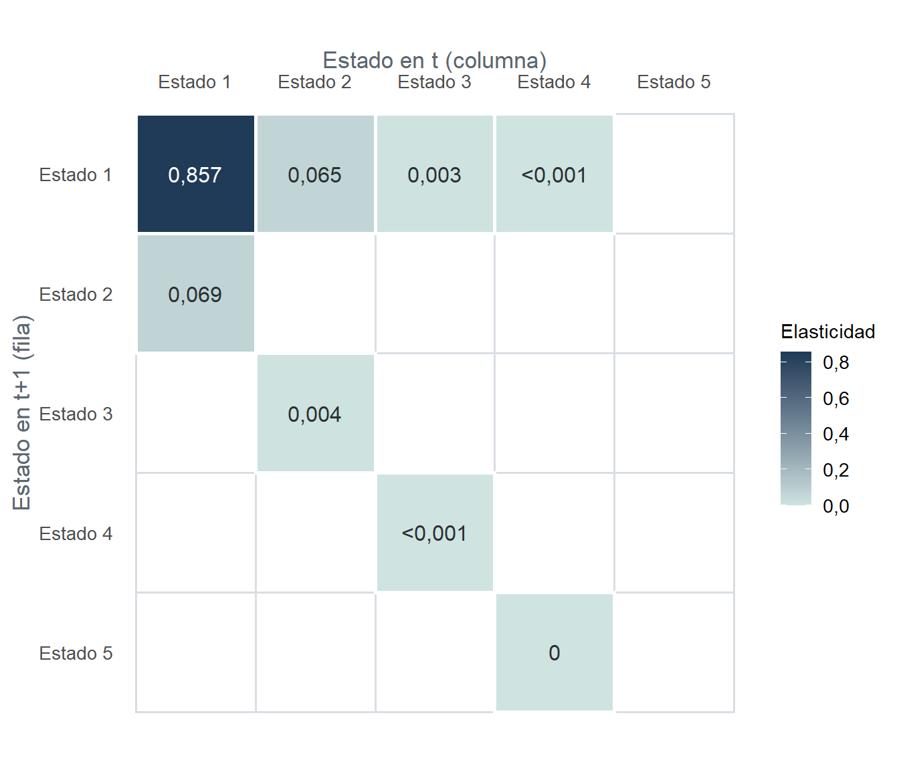

Se extiende la modelación matricial del Taller 6 a una población en la que la dinámica depende del estado de desarrollo (tamaño o cobertura) y no de la edad cronológica, usando como caso de estudio a Calotropis procera. El taller aborda cinco temáticas:
Seleccionar la variable de estado (morfológica) que mejor explica la reproducción de la especie.
Construir una tabla de vida estática por clases de cobertura a partir de un único censo.
Organizar las tasas vitales en matrices por estados (pre y post-reproductivas) y proyectar la población.
Calcular \lambda, la distribución estable de estados (c_x) y el valor reproductivo (v_x).
Evaluar, mediante sensibilidad, elasticidad y escenarios de manejo, el efecto de la tala periódica sobre el potencial de expansión de la especie.
Contexto ecológico
Calotropis procera es un arbusto invasor de ambientes abiertos y perturbados, con alta producción de semillas dispersadas por el viento. En muchas especies vegetales como esta, la dinámica poblacional no depende estrictamente de la edad, sino del tamaño o estado de desarrollo: dos individuos de la misma edad pueden tener coberturas y producciones de semillas muy distintas según las condiciones del micrositio. Bajo estas condiciones, los modelos matriciales por edades (Leslie, Taller 6) deben generalizarse para incorporar transiciones entre estados, dando lugar a los modelos de Lefkovitch (Lefkovitch, 1965).
Matrices por estados (Lefkovitch)
En una matriz de Lefkovitch, las clases representan estados (tamaño, cobertura, estadio ontogénico) y, a diferencia de la matriz de Leslie:
Puede haber permanencia (P_i) en la misma clase: individuos que sobreviven pero no crecen (diagonal principal).
Hay crecimiento o transición a la clase siguiente (G_i, subdiagonal).
Si la historia de vida lo requiere, también pueden existir retrocesos a estados previos (p. ej., por pérdida de biomasa o fragmentación) y aportes reproductivos en varias posiciones.
Estos modelos son frecuentes en organismos modulares como plantas o corales, en organismos con metamorfosis como los anfibios y en insectos holometábolos, en los que el desempeño vital se asocia más con el estado y con las condiciones del ambiente que con la edad (Caswell, 2001; de Kroon et al., 1986).
NotaEl modelo de este taller es una versión simplificada
Estimar permanencias, crecimientos y retrocesos requiere seguir a los mismos individuos en al menos dos censos. Como en este ejercicio se cuenta con un único censo, se construye una matriz por estados simplificada (fecundidades en la primera fila y transiciones en la subdiagonal, sin diagonal de permanencia), equivalente a una “Leslie por estados” con fines didácticos. Sus alcances y limitaciones se discuten al final del caso guiado.
Objetivos
Determinar la variable de estado (morfológica) que mejor se correlaciona con la reproducción de Calotropis procera.
Construir una tabla de vida estática de la muestra censada, por clases de cobertura.
Realizar una proyección multiestado para aproximar las densidades por clase de estado en pasos futuros.
Identificar, mediante sensibilidad, elasticidad y escenarios de manejo, las tasas vitales que controlan el potencial expansivo de la especie.
Procedimiento para la colecta de datos
Censo. Se realiza un reconocimiento del área de estudio en búsqueda de los individuos de la especie a censar, teniendo en cuenta los siguientes criterios: (1) frecuencia de aparición significativa, (2) variabilidad de tamaños o coberturas y (3) que se encuentren en fase reproductiva, con flores y frutos.
Posteriormente se escogen al azar 120 individuos (plántulas, juveniles o adultos). A cada individuo se le toman mediciones asociadas con su estado de crecimiento, que permiten tabular los datos por clases de tamaño: longitud total, ancho (diámetro de la copa), radio y cobertura. Adicionalmente se estima el número total de semillas a partir de una muestra evaluada.
Diferencias con el Taller 6. La construcción de la tabla de vida y del modelo matricial es conceptualmente similar a la de la población estructurada por edades, con tres diferencias metodológicas:
El censo no se organiza por edades, sino por estados de crecimiento (clases de cobertura).
La densidad de individuos (N_x) se obtiene construyendo una cohorte ficticia a partir de las frecuencias censadas (n_x).
No se cuenta con la maternidad (m_x), por lo que se calcula a partir de los reclutas esperados (B_x).
ImportanteSupervivencia de las semillas (s_0)
No todas las semillas producidas llegan a establecerse. Taghvaei (2012), en su tabla 2, reporta un porcentaje de germinación de 0,123 %, valor que se aplica al número total de semillas por clase para obtener los reclutas esperados (B_x). Este supuesto tiene un efecto importante sobre todos los resultados, por lo que se define una sola vez al inicio del caso guiado y se explora en el cuestionario.
Caso guiado: modelo por estados de Calotropis procera
Librerías, datos y parámetros del ejercicio
Código
library(readxl)library(dplyr)library(tidyr)library(ggplot2)library(kableExtra)# Ruta del archivo de datos (busca primero en la carpeta data/)ruta_xlsx <-if (file.exists("data/datos.t7.xlsx")) "data/datos.t7.xlsx"else"datos.t7.xlsx"# Parámetros del ejercicio (se modifican aquí y todo el taller se recalcula)s0 <-0.00123# Supervivencia de semillas a reclutas (0,123 %; Taghvaei, 2012)n_clases <-5# Número de clases de coberturat_proy <-12# Número de pasos a proyectar# Funciones auxiliares: tablas con coma decimal y números para el textotabla_kbl <-function(df, digitos =2) { df %>%kbl(digits = digitos, booktabs =TRUE,format.args =list(big.mark =".", decimal.mark =",")) %>%kable_classic(full_width =FALSE) %>%row_spec(0, bold =TRUE)}num <-function(x, d =2) format(round(x, d), nsmall = d, decimal.mark =",", big.mark =".")
La muestra tiene 120 individuos. Las variables utilizadas tienen fines didácticos; en un trabajo más detallado deberían considerarse los siguientes aspectos:
Clases o rangos de estados. Considerar criterios biológicos, como la asociación con aspectos fenológicos que afectan de manera más directa la dinámica reproductiva, y contrastar el método de ancho fijo con otros más flexibles, como los cuantiles.
Elección de la variable de estado. Además de las regresiones lineales, probar regresiones no lineales (p. ej., loess) e incluir un análisis de colinealidad entre las variables de estado.
Temporalidad del estudio. La modelación temporal requiere seguir a los individuos en el tiempo para evaluar permanencias (individuos que no crecen) y aportes asexuales (rebrotes, reversiones).
Paso 2. ¿Qué variable de estado explica mejor la reproducción?
El objetivo es encontrar la variable de estado que mejor se relaciona con la variable reproductiva (número de semillas). Se inicia con una matriz de correlación entre las variables de estado y las semillas.
Código
M <-cor(datos %>%select(Long.Tot, Ancho, Radio, Cobertura, Semillas))as.data.frame(as.table(M)) %>%setNames(c("Var1", "Var2", "r")) %>%ggplot(aes(x = Var1, y = Var2, fill = r)) +geom_tile(color ="white") +geom_text(aes(label =format(round(r, 2), decimal.mark =",")), size =4) +scale_fill_gradient2(low ="#5b6670", mid ="white", high ="#2b7a78",midpoint =0, limits =c(-1, 1)) +labs(x =NULL, y =NULL, fill ="r") +theme_minimal(base_size =13)

Figura 1: Correlación de Pearson entre las variables de estado y la producción de semillas
Se observa redundancia entre algunas variables: el radio y el ancho tienen una correlación de 1, porque el radio es la mitad del ancho, y la cobertura se calcula a partir del radio (área de la copa, \pi r^2). En la práctica, estas tres variables provienen de la misma medición. En cuanto a la relación con las semillas, la cobertura es la variable más correlacionada (r = 0,71).
A continuación se ajustan regresiones lineales simples de cada variable de estado contra las semillas y se comparan con el R² (además del valor p, el AIC y el BIC como criterios complementarios). El enfoque es exploratorio, por lo que no se detallan los supuestos de las pruebas.
Tabla 2: Comparación de regresiones lineales: Semillas ~ variable de estado
Variable
R2
Valor_p
AIC
BIC
Cobertura
0,50
1,1e-19
2.521,97
2.530,33
Ancho
0,47
8,1e-18
2.530,61
2.538,97
Radio
0,47
8,1e-18
2.530,61
2.538,97
Long.Tot
0,29
1,8e-10
2.564,53
2.572,90
La cobertura presenta el mayor R² y los menores AIC y BIC, por lo que será la variable de estado que define las clases de la tabla de vida.
Código
ggplot(datos, aes(x = Cobertura, y = Semillas)) +geom_point(alpha =0.6) +geom_smooth(method ="lm", se =TRUE, color ="#2b7a78") +labs(x ="Cobertura (m²)", y ="Semillas (Bx)") +theme_bw()

Figura 2: Relación entre la cobertura de los individuos censados y la producción de semillas
La relación es positiva y moderada, pero con alta dispersión y varianza no constante. Por ello, en un análisis más detallado conviene contrastarla con modelos suavizados (loess) o modelos lineales generalizados con transformaciones.
Paso 3. Definir las clases de cobertura
Se usan cinco intervalos de ancho fijo a partir del mínimo observado:
\text{ancho} = \frac{\max(C) - \min(C)}{5}
Los cortes se fijan con include.lowest = TRUE y los intervalos cerrados a la derecha (right = TRUE) para garantizar la reproducibilidad del procedimiento.
Código
Cmin <-min(datos$Cobertura, na.rm =TRUE)Cmax <-max(datos$Cobertura, na.rm =TRUE)ancho <- (Cmax - Cmin) / n_clasescortes <-seq(Cmin, Cmax, length.out = n_clases +1) # Seis cortes para cinco intervalosetqs <-paste0("C", 1:n_clases)intervalos <-paste0(sprintf("%.2f", head(cortes, -1)), " - ", sprintf("%.2f", cortes[-1]))# Clasificación de cada individuo en su clase de coberturadatos <- datos %>%mutate(Clase_C =cut(Cobertura, breaks = cortes, labels = etqs,include.lowest =TRUE, right =TRUE))round(ancho, 4) # Ancho de clase (m²)
[1] 1.2701
Código
ggplot(datos, aes(x = Cobertura)) +geom_histogram(bins =30, fill ="#5b6670", alpha =0.7) +geom_vline(xintercept = cortes, linetype =2) +annotate("text", x =head(cortes, -1) +diff(cortes) /2, y =Inf,vjust =1.5, label = etqs, size =3.5) +labs(x ="Cobertura (m²)", y ="Frecuencia de individuos (nx)") +theme_bw()

Figura 3: Distribución de la cobertura con los cortes de las cinco clases
La mayor concentración de individuos está en coberturas bajas (C1, seguida de C2), lo que sugiere una estructura poblacional dominada por estados tempranos o de menor tamaño.
Paso 4. Tabla de vida por clases de cobertura
4.1 Frecuencias y reclutas esperados
n_x: número de individuos censados en cada clase de cobertura.
B_x: reclutas esperados por clase, obtenidos al multiplicar el total de semillas de la clase por la supervivencia de las semillas: B_x = \text{semillas}_x \cdot s_0. Indica cuántas de las semillas producidas por toda la clase son reclutas viables (fecundidad neta efectiva).
Código
tabla_v <- datos %>%group_by(Clase_C) %>%summarise(nx =n(),Tot_semillas =sum(Semillas, na.rm =TRUE),.groups ="drop") %>%arrange(Clase_C) %>%mutate(Clases = intervalos[as.integer(Clase_C)], .after = Clase_C,Bx =round(Tot_semillas * s0, 0))tabla_kbl(tabla_v, digitos =0)sum(tabla_v$nx) # Comprobación: deben ser los individuos censados
[1] 120
Tabla 3: Frecuencias por clase de cobertura, total de semillas y reclutas esperados (Bx)
Clase_C
Clases
Bx
nx
Tot_semillas
C1
0.03 - 1.30
421
82
342.517
C2
1.30 - 2.57
570
28
463.393
C3
2.57 - 3.84
222
8
180.100
C4
3.84 - 5.11
59
1
47.811
C5
5.11 - 6.38
63
1
51.297
4.2 Tabla de vida hasta la esperanza de vida
Al ser una tabla estática (un único censo), se asume que la distribución de individuos entre clases refleja su supervivencia, y se construye una cohorte ficticia con las siguientes ecuaciones (clases x = 1, \dots, k):
Estimador
Ecuación
Significado
Cohorte ficticia
N_x = \sum_{j \ge x} n_j
Sobrevivientes al inicio de la clase x (suma acumulada descendente)
Maternidad
m_x = B_x / N_x
Reclutas esperados por individuo de la clase x
Supervivencia
S_x = N_{x+1} / N_x
Probabilidad de pasar de la clase x a la x+1
Horario de supervivencia
l_x = N_x / N_1
Proporción de la cohorte que llega a la clase x
Pérdida entre clases
d_x = l_x - l_{x+1}
Por convención, d_k = l_k
Probabilidad de muerte
q_x = d_x / l_x
En la última clase, q_k = 1
Sobrevivientes promedio
L_x = (N_x + N_{x+1})/2
En la última clase, L_k = N_k / 2
Tiempo de vida acumulado
T_x = \sum_{j \ge x} L_j
Acumulado desde x hasta la última clase
Esperanza de vida
e_x = T_x / N_x
En número de clases que puede avanzar un individuo
Tabla 4: Tabla de vida estática de Calotropis procera por clases de cobertura
x
Clase_C
nx
Nx
Bx
mx
lx
dx
qx
Sx
Lx
Tx
ex
1
C1
82
120
421
3,508
1,000
0,683
0,683
0,317
79,0
111,0
0,925
2
C2
28
38
570
15,000
0,317
0,233
0,737
0,263
24,0
32,0
0,842
3
C3
8
10
222
22,200
0,083
0,067
0,800
0,200
6,0
8,0
0,800
4
C4
1
2
59
29,500
0,017
0,008
0,500
0,500
1,5
2,0
1,000
5
C5
1
1
63
63,000
0,008
0,008
1,000
0,000
0,5
0,5
0,500
Los resultados muestran un patrón de fuerte mortalidad en los primeros estados de cobertura. De todos los individuos que inician la cohorte, apenas un 32 % llega a la segunda clase y solo un 8 % a la tercera. La supervivencia entre clases se mantiene baja (S_x entre 0,20 y 0,32 en las tres primeras clases), y aun en C4 la probabilidad de transición es modesta (0,50). La esperanza de vida (e_x) es inferior o cercana a una clase en todos los estados: en promedio, un individuo que alcanza cualquier clase de cobertura apenas logra avanzar a la siguiente.
Lo anterior se compensa con un alto número de reclutas esperados (B_x). Este patrón de “muchos descendientes, pocos sobrevivientes” representa una estrategia colonizadora, típica de especies invasoras (compromiso entre alta fecundidad y baja supervivencia temprana), que le permite a Calotropis procera distribuirse rápidamente en ambientes perturbados o abiertos, sin incluir aún sus estrategias de incremento asexual por regeneración y rebrotes.
Tip¿En qué unidades está e_x?
e_x se expresa en número de clases que puede avanzar un individuo. Para expresarla en m² de cobertura, se multiplica por el ancho de clase: e_x \times 1,27 m².
4.3 Estadísticos demográficos de la tabla de vida
Tasa reproductiva neta: R_0 = \sum l_x m_x
Tiempo generacional: T = \dfrac{\sum x \, l_x m_x}{\sum l_x m_x}
Tabla 5: Estadísticos demográficos generales de la tabla de vida
R0
T
r_est = ln(R0)/T
r (Euler-Lotka)
lambda = exp(r)
t_dup
11,125
2,081
1,158
1,532
4,627
0,452
Tasa reproductiva neta:R_0 \approx 11,12. Cada individuo contribuye en promedio con alrededor de 11 reclutas exitosos a lo largo de su trayectoria de cobertura.
Tiempo generacional:T \approx 2,08 clases de cobertura entre el reclutamiento y la producción de nuevos reclutas.
Tasa instantánea:r \approx 1,532 por intervalo de cobertura.
Tasa finita:\lambda \approx 4,63. En cada intervalo de cobertura la muestra se multiplica por 4,63 (aumento de 363 %).
Tiempo de duplicación:t_{dup} \approx 0,45 intervalos: la muestra se duplicaría antes de que sus individuos avancen media clase de cobertura.
Este es un perfil típico de especies invasoras: alta fecundidad, tiempo generacional corto y tasas de crecimiento explosivas.
Paso 5. Estimadores de estructura de estados
Para construir las matrices se requieren las fecundidades según el tipo de censo (como en el Taller 6), y a partir de la tabla de vida también se calculan la distribución estable (c_x) y el valor reproductivo (v_x), para compararlos más adelante con los obtenidos de forma matricial:
Fecundidad pre-reproductiva: F_{pre} = S_1 \cdot m_{x+1}, donde S_1 es la supervivencia de la primera clase.
Tabla 6: Estimadores de estructura de estados a partir de la tabla de vida
x
Clase_C
Nx
mx
Sx
Fpre
Fpost
cx
vx
vx_norm
1
C1
120
3,508
0,317
4,750
4,750
0,932
4,627
1,000
2
C2
38
15,000
0,263
7,030
5,842
0,064
16,352
3,534
3
C3
10
22,200
0,200
9,342
5,900
0,004
23,769
5,137
4
C4
2
29,500
0,500
19,950
31,500
0,000
36,307
7,846
5
C5
1
63,000
0,000
0,000
0,000
0,000
63,000
13,615
Fecundidades. Los valores post-reproductivos alcanzan su máximo en C4 (31,50), lo que señala que los pocos individuos que llegan a ese estado tienen una altísima contribución reproductiva. En C5 la fecundidad que entra a la matriz es cero, porque ningún individuo avanza a una clase siguiente.
Distribución estable (c_x). Cuando la población se estabiliza, 93 % de los individuos estaría en C1 y 6 % en C2; las clases superiores retienen una fracción marginal. Es una estructura piramidal: muchos individuos pequeños y pocos adultos grandes.
Valor reproductivo (v_x). Aumenta con la cobertura y es máximo en C5 (13,61 veces el de C1). Aunque la población está dominada por individuos pequeños, el potencial reproductivo se concentra en los menos numerosos, que alcanzan las mayores coberturas.
Paso 6. Matrices por estados (pre y post-reproductivas)
Se construyen como en el Taller 6: fecundidades en la primera fila y supervivencias (transiciones) en la subdiagonal. La matriz post-reproductiva es completa (5 × 5) y su subdiagonal inicia en S_1; la pre-reproductiva excluye el último estado (4 × 4) y su subdiagonal inicia en S_2.
Código
estados <- tabla2$xSx <- tabla2$Sxk <-length(estados)# Matriz POST (k x k): primera fila Fpost, subdiagonal S1, S2, ...L_post <-matrix(0, nrow = k, ncol = k)L_post[1, ] <- tabla2$FpostL_post[cbind(2:k, 1:(k -1))] <- Sx[1:(k -1)]dimnames(L_post) <-list(paste0("Estado_", estados), paste0("Estado_", estados))# Matriz PRE ((k-1) x (k-1)): primera fila Fpre, subdiagonal S2, S3, ...k_pre <- k -1L_pre <-matrix(0, nrow = k_pre, ncol = k_pre)L_pre[1, ] <- tabla2$Fpre[1:k_pre]L_pre[cbind(2:k_pre, 1:(k_pre -1))] <- Sx[2:k_pre]dimnames(L_pre) <-list(paste0("Estado_", estados[1:k_pre]), paste0("Estado_", estados[1:k_pre]))
Código
tabla_kbl(as.data.frame(L_post))
Tabla 7: Matriz por estados post-reproductiva (L_post)
Estado_1
Estado_2
Estado_3
Estado_4
Estado_5
Estado_1
4,75
5,84
5,9
31,5
0
Estado_2
0,32
0,00
0,0
0,0
0
Estado_3
0,00
0,26
0,0
0,0
0
Estado_4
0,00
0,00
0,2
0,0
0
Estado_5
0,00
0,00
0,0
0,5
0
Código
tabla_kbl(as.data.frame(L_pre))
Tabla 8: Matriz por estados pre-reproductiva (L_pre)
Estado_1
Estado_2
Estado_3
Estado_4
Estado_1
4,75
7,03
9,34
19,95
Estado_2
0,26
0,00
0,00
0,00
Estado_3
0,00
0,20
0,00
0,00
Estado_4
0,00
0,00
0,50
0,00
La subdiagonal (0,32; 0,26; 0,20; 0,50) confirma que la transición entre estados de cobertura es difícil: pocos individuos logran subir de clase. En L_{post} la primera fila muestra fecundidades concentradas en estados avanzados (hasta 31,50 en C4): los individuos grandes son el motor reproductivo. En L_{pre} la supervivencia de la primera clase ya está incluida en todas las fecundidades, por lo que estas son mayores en los primeros estados y la subdiagonal empieza en la segunda transición.
Paso 7. Proyección multiestado
Se reutilizan las funciones del Taller 6: modelo_pob (producto N_{t+1} = L \cdot N_t), propiedades_L (\lambda, r, c_x, v_x) y una función para graficar. Como las densidades crecen varios órdenes de magnitud, el eje vertical se presenta en escala logarítmica.
Código
# Proyección N(t+1) = L x N(t) durante t pasosmodelo_pob <-function(L, Nt, t) { out <-matrix(NA_real_, nrow = t +1, ncol =length(Nt)) out[1, ] <- Ntfor (i in1:t) out[i +1, ] <- L %*% out[i, ] out <-as.data.frame(out)colnames(out) <-colnames(L) out %>%mutate(Paso =0:t, .before =1)}# Propiedades emergentes de la matrizpropiedades_L <-function(L) { eigR <-eigen(L) pos <-which.max(Mod(eigR$values)) lambda <-Re(eigR$values[pos]) # Autovalor dominante w <-Re(eigR$vectors[, pos]) cx <- w /sum(w) # Distribución estable eigL <-eigen(t(L)) v <-Re(eigL$vectors[, which.max(Mod(eigL$values))]) vx <- v / v[1] # Valor reproductivo (v1 = 1) r <-log(lambda)list(lambda = lambda, r = r, t_dup =log(2) / r,cx =setNames(cx, rownames(L)), vx =setNames(vx, rownames(L)))}# Figura de la proyección (eje y logarítmico)grafico_proyeccion <-function(sim, titulo) { sim %>%pivot_longer(cols =-Paso, names_to ="Estado", values_to ="Abundancia") %>%ggplot(aes(x = Paso, y = Abundancia, color = Estado)) +geom_point(size =3) +geom_line() +scale_y_log10() +scale_x_continuous(breaks =seq(0, max(sim$Paso), by =2)) +labs(x ="Pasos de proyección (transiciones entre clases de cobertura)",y =expression(Densidad~(N[x])~"-"~escala~log[10]),color ="Estados", title = titulo) +theme_bw() +theme(axis.text =element_text(size =12),axis.title =element_text(size =12),panel.grid =element_blank())}Nt <- tabla2$Nx # Vector inicial: cohorte ficticia por estadoNt
Crecimiento. Se observa un crecimiento exponencial sostenido en todos los estados; en escala logarítmica las trayectorias se vuelven paralelas a partir de los primeros pasos, señal de que la población converge rápidamente a su distribución estable.
Tasa finita:\lambda \approx 5,13; la población se multiplica por 5,13 en cada intervalo de cobertura (aumento de 413 %), con r \approx 1,636 y t_{dup} \approx 0,42 intervalos.
Distribución estable (c_x): fuertemente dominada por el Estado 1 (93,9 %), seguido del Estado 2 (5,8 %); los estados 3 a 5 tienen proporciones cercanas a cero.
Valor reproductivo (v_x): aumenta hasta el Estado 4 (6,14 veces el del Estado 1) y es cero en el Estado 5. Como en el Taller 6, en el censo post-reproductivo el valor reproductivo de un estado se “descuenta” por la supervivencia necesaria para volver a reproducirse, y los individuos de C5 no avanzan a otra clase.
En síntesis: muchos individuos pequeños sostienen la estructura de la población, mientras que pocos individuos grandes sostienen el motor reproductivo del crecimiento.
La proyección pre-reproductiva tiene el mismo \lambda \approx 5,13 que la post-reproductiva, aunque la matriz tiene un estado menos.
La distribución estable sigue dominada por el Estado 1 (94,9 %), y el valor reproductivo aumenta con la cobertura hasta el último estado de la matriz (3,89).
Paso 8. Comparación entre la tabla de vida y las matrices
Código
tibble(Procedimiento =c("Tabla de vida (Euler-Lotka)", "Matriz post-reproductiva", "Matriz pre-reproductiva"),r =c(r_tabla, prop_post$r, prop_pre$r),lambda =c(lambda_tabla, prop_post$lambda, prop_pre$lambda),t_dup =log(2) / r) %>%tabla_kbl(digitos =3)
Tabla 11: Tasa finita de crecimiento estimada por los tres procedimientos
Procedimiento
r
lambda
t_dup
Tabla de vida (Euler-Lotka)
1,532
4,627
0,452
Matriz post-reproductiva
1,636
5,133
0,424
Matriz pre-reproductiva
1,636
5,133
0,424
Igual que en el Taller 6, las matrices pre y post-reproductiva producen el mismo\lambda, porque están parametrizadas de forma temporalmente coherente. Sin embargo, a diferencia del Taller 6, el \lambda de la tabla de vida (4,63) no coincide con el de las matrices (5,13).
Tip¿Por qué difieren la tabla de vida y las matrices?
Las fecundidades de las matrices usan la maternidad de la clase siguiente (F_x = S \cdot m_{x+1}). Este esquema asume que la primera clase corresponde a individuos recién incorporados que aún no se reproducen, como la edad 0 del Taller 6 (donde m_0 = 0). En Calotropis, en cambio, la clase C1 sí produce semillas (m_1 \approx 3,51), y ese aporte entra en la ecuación de Euler-Lotka pero no en las matrices.
Si se excluye m_1 de la ecuación de Euler-Lotka y se desplazan las clases un intervalo, la tabla de vida reproduce el \lambda matricial:
La diferencia no es un error de cálculo, sino una decisión sobre cómo se representa la reproducción de la primera clase, que se discute en el cuestionario.
Paso 9. Sensibilidad y elasticidad
La matriz L_{post} proyectó un crecimiento potencial muy elevado (\lambda \approx 5,13), lo que sugiere una rápida expansión de C. procera en ausencia de limitaciones ambientales. Sin embargo, el parche evaluado está sometido a tala periódica por el personal encargado, una perturbación recurrente que altera las tasas vitales asociadas a ese crecimiento.
Los análisis de perturbación (Lemos et al., 2005) permiten cuantificar cómo pequeños cambios en la supervivencia (S_x) o la fecundidad (F_x) afectan \lambda, y responder dos preguntas aplicadas:
¿Cómo cambia la magnitud de \lambda si una perturbación modifica una tasa vital específica?
¿Qué componente del ciclo de vida debe alterarse para reducir de manera efectiva el potencial expansivo de la especie?
Sensibilidad (S_{ij} = \partial\lambda / \partial a_{ij}): efecto absoluto de un cambio de una unidad en el elemento a_{ij}. Como es una medida absoluta, no permite comparar directamente una fecundidad alta (p. ej., 30 reclutas) con una probabilidad de transición (p. ej., 0,3).
Elasticidad (e_{ij} = (a_{ij} / \lambda) \, S_{ij}, con \sum e_{ij} = 1): efecto proporcional; cada valor se interpreta como la proporción del crecimiento poblacional atribuible a esa tasa vital. Responde a la pregunta: si una tasa vital cambia en un 1 %, ¿en qué proporción cambia \lambda?
as.data.frame(as.table(E)) %>%setNames(c("Fila", "Columna", "e")) %>%ggplot(aes(x = Columna, y = Fila, fill = e)) +geom_tile(color ="white") +geom_text(aes(label =ifelse(e >0.001, format(round(e, 3), decimal.mark =","), "")), size =4) +scale_y_discrete(limits = rev) +scale_fill_gradient(low ="white", high ="#2b7a78") +labs(x ="Estado en t (columna)", y ="Estado en t+1 (fila)", fill ="Elasticidad") +theme_minimal(base_size =13)

Figura 6: Elasticidad de cada elemento de la matriz post-reproductiva
La elasticidad se concentra casi totalmente en el elemento a_{1,1} (0,857), la fecundidad efectiva asociada al Estado 1. Le siguen, muy por debajo, la transición temprana a_{2,1} (0,069) y la fecundidad del Estado 2, a_{1,2} (0,065). El crecimiento proyectado depende, por tanto, del componente reproductivo de los primeros estados.
Paso 10. Escenarios de manejo
Para evaluar si la tala periódica puede alterar la expansión proyectada, se simulan reducciones en tasas vitales específicas de L_{post}, guiadas por el análisis de elasticidad:
Escenario 1: reducción del 30 % en la fecundidad dominante (a_{1,1}).
Escenario 2: reducción del 50 % en todas las fecundidades (fila superior), que simula la remoción recurrente de individuos reproductivos.
Escenario 3: reducción del 40 % en la transición temprana (a_{2,1}).
Tabla 13: Efecto de los escenarios de manejo sobre lambda (L_post)
Escenario
lambda
Cambio (%)
Base (sin manejo)
5,13
0,00
1. Fecundidad a11 -30 %
3,85
-25,03
2. Todas las fecundidades -50 %
2,76
-46,32
3. Transición a21 -40 %
4,99
-2,84
Escenario 1: al reducir en 30 % la fecundidad dominante, \lambda desciende a 3,85; es una disminución considerable, pero el parche seguiría creciendo rápidamente.
Escenario 2: al reducir todas las fecundidades a la mitad, \lambda baja a 2,76, lo que confirma que el crecimiento está fuertemente controlado por el componente reproductivo; aun así, la perturbación no logra detener la expansión (\lambda > 1).
Escenario 3: al reducir en 40 % la transición temprana, \lambda prácticamente no cambia (4,99), lo que evidencia que las transiciones tienen mucha menor influencia que la fecundidad.
Interpretación bajo perturbación recurrente. El modelo proyecta una expansión extremadamente rápida en ausencia de limitaciones externas, pero en campo el parche está sometido a talas periódicas. Los resultados sugieren que la tala solo será un mecanismo de control efectivo si logra disminuir de manera sustancial la producción de reclutas asociada a los estados de mayor elasticidad; si afecta principalmente las transiciones estructurales, el potencial de expansión permanecerá elevado. Por tanto, la discrepancia entre la proyección exponencial del modelo y la estructura observada en campo puede interpretarse como evidencia indirecta de que las perturbaciones recurrentes están modificando, sobre todo, las tasas vitales asociadas a la fecundidad.
En el contexto real, además, la perturbación no es selectiva: afecta individuos de todos los tamaños, y la especie inicia su recuperación mediante regeneración asexual a partir de los fragmentos de tallos que quedan en el suelo, un mecanismo que este modelo no incluye.
Limitaciones y supuestos del modelo
El modelo se construyó a partir de un solo censo (una fotografía de la población). Es útil para aprender la lógica de los modelos matriciales y su interpretación ecológica, pero está sujeto a los siguientes supuestos:
Sin transiciones observadas. Una matriz por estados debería describir cómo cambian los individuos de estado entre dos censos consecutivos. Con un único censo no es posible cuantificar la permanencia (individuos que no crecen) ni los retrocesos (individuos que regresan a estados menores por pérdida de biomasa o fragmentación).
Matriz simplificada. En sentido estricto, el caso corresponde a una matriz por estados (Lefkovitch), porque las clases no son edades sino categorías de cobertura. Por falta de datos de transición, se usa una estructura simplificada, sin diagonal de permanencia.
\lambda y r “por intervalo de estado”, no “por año”. La unidad de proyección es el paso entre clases de cobertura, no un intervalo de tiempo. Para una lectura temporal (por año o por estación) se requieren al menos dos censos y la estimación explícita de las transiciones entre ellos.
Supuestos sobre la fecundidad. El uso de s_0 asume que el valor de la literatura es transferible al sitio (suelo, clima, interacciones, régimen de perturbación) y que semillas × s_0 equivale a reclutas efectivos. Como s_0 puede variar en órdenes de magnitud entre microhábitats y años, los resultados de R_0, r y \lambda son muy sensibles a este parámetro. Además, la fecundidad solo incluye la reproducción sexual; en parches sometidos a poda frecuente, la regeneración vegetativa (rebrotes basales, fragmentos de tallo, ramas en contacto con el suelo) puede ser una vía importante de reclutamiento que el modelo subestima.
Tasas constantes. Toda proyección matricial asume tasas vitales constantes. En poblaciones reales estas cambian por la variación climática, el régimen de disturbio, las interacciones, la limitación de recursos, la denso-dependencia y la heterogeneidad espacial. Por ello, c_x debe entenderse como un resultado teórico.
En consecuencia, los resultados deben interpretarse como el potencial demográfico de la muestra por intervalos de cobertura. Su validez ecológica requiere transiciones observadas entre censos y la estimación explícita de permanencia y crecimiento, mediante el seguimiento multitemporal de la población.
Errores comunes e interpretación
AdvertenciaErrores frecuentes en modelos por estados
Confundir una Lefkovitch completa con una matriz simplificada. Sin diagonal de permanencia, el modelo es una versión por estados tipo Leslie, útil con fines pedagógicos pero no equivalente a una Lefkovitch completa.
Leer los pasos de proyección como años. Sin censos repetidos, la unidad de proyección es la transición entre estados de cobertura, no un año calendario.
No diferenciar semillas totales de reclutas esperados. Usar las semillas sin ajustar por s_0 infla m_x, R_0, r y \lambda.
Usars_0 de la literatura sin calibrarlo en el sitio evaluado (microhábitat, año climático, intensidad de disturbios), lo que puede sobreestimar \lambda.
Mezclar la lógica pre y post-reproductiva al calcular las fecundidades, lo que sesga \lambda.
Ignorar la reproducción asexual (rebrotes, fragmentación), que puede ser importante en ecosistemas sometidos a poda frecuente.
Aplicaciones ecológicas y ambientales
Control de especies invasoras: estimar su potencial de expansión bajo escenarios de reclutamiento y supervivencia, e identificar los estados con mayor elasticidad para priorizar allí las acciones de manejo.
Demografía de plantas con variables de estado como la cobertura, el diámetro o la altura, cuando la edad es difícil de estimar.
Identificación de etapas críticas: distinguir los estados de mayor valor reproductivo (v_x; pocos individuos con alto aporte futuro) de los más abundantes en la distribución estable (c_x), evitando decisiones basadas solo en la abundancia censada.
Restauración y conservación: simular el efecto de cambios en supervivencias o fecundidades sobre \lambda y c_x en especies amenazadas.
Evaluación de perturbaciones recurrentes (poda, tala manual, incendios) que alteran selectivamente las tasas vitales.
Cuestionario
1. Modelación multiestado bajo censos pre y post-reproductivos
Trabajar con la tabla de vida y las matrices L_{post} y L_{pre} del caso guiado.
Variable de estado. Explique por qué en este ejercicio se reemplaza la edad por un estado de tamaño (cobertura). ¿Qué ventajas y qué riesgos introduce esta decisión al interpretar S_x, m_x y la proyección? ¿Qué implica que ancho, radio y cobertura provengan de la misma medición?
Cohorte ficticia. Describa cómo se construye N_x a partir de los conteos n_x. ¿Qué significa ecológicamente que N_x sea una suma acumulada descendente y qué limitación implica?
Reclutas efectivos. Explique cómo se obtiene B_x y por qué este paso es crítico para el cálculo de m_x y de \lambda. ¿En qué dirección se sesgaría \lambda si s_0 estuviera sobrestimado? Explique la causa demográfica.
Elementos de la matriz. En L_{post} y L_{pre}, indique qué elementos representan fecundidad, transición o supervivencia y permanencia (si existe). Concluya si la matriz implementada es una Lefkovitch completa o una matriz por estados simplificada.
Comparación pre vs post. Compare \lambda, c_x y v_x de ambos censos. ¿Qué cambia y qué se mantiene cuando la parametrización es temporalmente coherente?
Interpretación ecológica (6 a 8 líneas). Contraste el patrón de dominancia de estados pequeños en c_x con el patrón de v_x. ¿Qué indica esto sobre “quiénes son más numerosos” frente a “quiénes sostienen el crecimiento”?
Diagnóstico de error. ¿Qué sesgo se espera en \lambda si se construye una matriz pre-reproductiva con fecundidades calculadas como post-reproductivas (o viceversa)? Indique la dirección del sesgo y su causa.
2. Coherencia entre la tabla de vida y la matriz
¿Qué proporción de los individuos de la clase C1 produjo semillas? Calcúlela con los datos del censo.
Con base en el Paso 8, explique por qué el \lambda de la tabla de vida difiere del de las matrices. ¿Cuál de los dos enfoques representa mejor la biología de Calotropis y por qué?
Proponga cómo modificar la matriz para incluir la reproducción de C1 y calcule el nuevo \lambda.
En la matriz post-reproductiva, el elemento a_{1,1} combina la supervivencia de C1 y la maternidad de la clase siguiente (S_1 \cdot m_2). Si la tala reduce la supervivencia S_1 en un 40 %, ¿qué elementos de la matriz deberían cambiar? Recalcule \lambda y compárelo con el escenario 3 del Paso 10. ¿Qué concluye sobre la forma de simular perturbaciones en tasas vitales?
3. Sensibilidad de los resultados a s_0
El parámetro s0 está definido al inicio del caso guiado.
Recalcule B_x, m_x y \lambda para tres escenarios: s_0 bajo (la mitad), observado y alto (el doble).
Compare los tres \lambda y describa cuál escenario cambia más la proyección y por qué.
Redacte una recomendación (6 a 8 líneas) sobre cómo reportar resultados cuando s_0 proviene de la literatura y no de una medición local.
Explique por qué una variación en s_0 afecta (o no) de manera distinta a L_{pre} y L_{post}.
4. Diagnóstico estructural de la matriz
Identifique si en L_{post} existen probabilidades de permanencia (diagonal).
Si la diagonal es cero (excepto a_{1,1}, que es una fecundidad), explique qué componente demográfico falta para que el modelo sea una Lefkovitch completa y qué dato de campo se necesitaría para estimarlo.
Indique cómo cambiaría cualitativamente la proyección si existiera una alta permanencia en C1 y C2.
5. Escenarios de manejo en L_{pre}
Repita los escenarios del Paso 10 con la matriz pre-reproductiva.
Reduzca en un 30 % la fecundidad dominante de L_{pre} y recalcule \lambda.
Reduzca en un 40 % la transición temprana (a_{2,1}) y compare la magnitud del efecto con el escenario anterior.
Compare los resultados con los escenarios equivalentes en L_{post}. ¿El efecto del manejo es mayor, menor o similar bajo el esquema pre-reproductivo?
Discuta (6 a 8 líneas): ¿el momento del censo cambia la interpretación del manejo, aun cuando el ciclo biológico sea el mismo? ¿Podría una evaluación basada solo en L_{pre} subestimar o sobreestimar la efectividad del control manual?
6. Revisión bibliográfica (opcional)
Con apoyo en Gotelli (2008) u otra referencia demográfica, explique (máximo 12 líneas) por qué el momento del censo puede producir matrices distintas que describen el mismo ciclo biológico.
Con apoyo en una referencia de demografía vegetal o de invasiones biológicas, explique por qué en especies colonizadoras se espera una alta contribución de la fecundidad y del reclutamiento temprano, y discuta si ese patrón es coherente con los resultados de Calotropis (c_x, v_x, \lambda).
Material complementario
Las siguientes referencias corresponden a versiones anteriores del taller y se conservan como consulta.
Ejemplo de proyección matricial por estados: Calotropis procera en Unimagdalena (2023-II)
Referentes bibliográficos
Akçakaya, H. R., Burgman, M. A., & Ginzburg, L. R. (1999). Applied population ecology: principles and computer exercises using RAMAS EcoLab 2.0. Sinauer Associates.
Caswell, H. (2001). Matrix population models: construction, analysis, and interpretation (2nd ed.). Sinauer Associates.
de Kroon, H., Plaisier, A., van Groenendael, J., & Caswell, H. (1986). Elasticity: the relative contribution of demographic parameters to population growth rate. Ecology, 67(5), 1427–1431.
Gotelli, N. J. (2008). A Primer of Ecology (4th ed.). Sinauer Associates.
Lefkovitch, L. P. (1965). The study of population growth in organisms grouped by stages. Biometrics, 21(1), 1–18.
Lemos-Espinal, J. A., Rojas González, R. I., & Zúñiga Vega, J. J. (2005). Técnicas para el estudio de poblaciones de fauna silvestre. ENLACE_PDF
Morris, W. F., & Doak, D. F. (2002). Quantitative conservation biology: theory and practice of population viability analysis. Sinauer Associates.